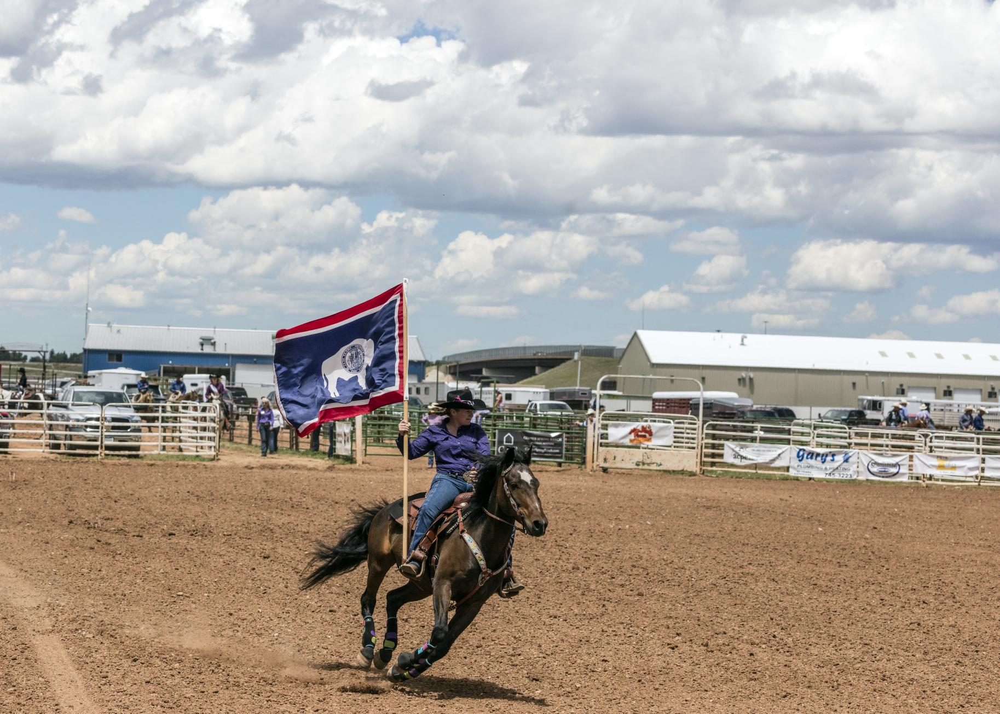

Nov 11, 2026
The state flag, the Indian paintbrush, the meadowlark, and the bison did not wander into office on their own. The Legislature wrote each symbol into Wyoming law.
Research report (PDF) · Word copy (.docx)

CHEYENNE — Out on the high plains, Wyoming has a set of official symbols. They are not just pictures in a school book, and they did not wander into the statute book on their own. The Legislature wrote them into state law, one bill at a time.1
Lawmakers, given enough sessions, will name almost anything that stands still long enough. In this case, they named ordinary, familiar things a state can fairly be proud of.
The Secretary of State's office keeps a student's list of those symbols. The statutes sit in Title 8, Chapter 3, of Wyoming law.3 It is not a short chapter. The list has grown the way a tack room grows: one useful thing, then another, then a dinosaur.
The Great Seal came first, as official hardware often does. The Second Legislature adopted it in 1893. Lawmakers revised it in 1921.2
They took nearly 30 years to have a second look at their own artwork, which is about as fast as a deliberative body ever moves.
The official motto, "Equal Rights," appears on the seal, and a motto that short can still carry a full day's work without complaint.1 3
The state flag is the symbol many families know best. It was designed by Verna Keays of Buffalo, later Mrs. Keyes of Casper. The 14th Legislature adopted it on Jan. 31, 1917.1
A person from Buffalo drew it, and the Legislature in Cheyenne made it official. That is a fair division of labor.
A white bison stands in a blue field. The state seal sits on the bison the way a brand sits on a hide, which is how the Secretary of State describes the flag.
A red border and a white stripe wrap the flag. The colors are the same as those of the national flag.1 3 A state that brands cattle was not going to leave its flag unbranded.
That same day, Jan. 31, 1917, lawmakers also adopted the state flower. It is the Indian paintbrush, a bright plant with vermilion bracts.1 3 They did not pick a shy flower, and that paintbrush already came fully colored.
The state bird came ten years later. On Feb. 5, 1927, Wyoming adopted the meadowlark. It is a brown bird with a yellow breast and a black mark on its chest, and it lives in meadows and fields.1 3 A state could do worse than officially sing its praises.
The state tree is the cottonwood. Lawmakers adopted it on Feb. 1, 1947. It is a large, fast-growing tree of the Great Plains and the eastern edge of the Rocky Mountains. The trees are named for the cotton-like hairs on their seeds.1 3
With that, the official list put down roots.
The bison is the official state mammal. The Legislature adopted it on Feb. 23, 1985.1 3 The honor did not arrive in a stampede. The bison had been doing the job on the flag since 1917, and the paperwork caught up later.
Kids often like the later picks just as much. The state fossil is Knightia, a small fish found in stone in Wyoming's Green River Formation. It was adopted on Feb. 18, 1987, the same day as the state fish, the cutthroat trout.1 3
One fish is stone, and one fish still swims, so the Legislature, for once, covered the past and the present in a single day.
The state dinosaur is the triceratops, adopted on March 18, 1994, and old bones, it turns out, can still get a title.
The state sport is rodeo, adopted in 2003.1 3 That year, Wyoming saddled up an official sport. A three-horned dinosaur and a rodeo are hard to confuse, but both have a way of holding a child's attention.
In 2010, the Legislature also adopted an official state code, drawn from a book called Cowboy Ethics. One line is, "Take pride in your work." Another is, "When you make a promise, keep it."1 3
Those are not fancy words, and they would not surprise anyone who has had to mend a fence twice because the first try was careless.
Each of these symbols had to make the same trip as other bills. A member introduced a bill, the House and the Senate voted, and the governor signed it. Then the symbol had a place in the law. That is a long trail for a flower, or a bird, or a fish in a rock, and official things in Wyoming do not get to skip the gate.
A rider can still carry that flag around a rodeo arena, with the bison on the cloth and the wind at its back. That is a fine place to see a state symbol earn its keep.
Credits
- Wyoming Secretary of State — Student's Corner, State Symbols (flag, designer Verna Keays / Mrs. A.C. Keyes, adoption dates, motto, flower, bird, tree, mammal, fossil, fish, dinosaur, rodeo, and the 2010 state code from Cowboy Ethics by James P. Owen). https://sos.wyo.gov/Services/StateInfo_Symbols.aspx
- Wyoming Secretary of State — Great Seal (adopted by the Second Legislature in 1893 and revised by the Sixteenth Legislature in 1921). https://sos.wyo.gov/Services/GreatSeal.aspx
- Wyoming Legislature — Wyoming Statutes Title 8, Chapter 3 (official symbols, including W.S. 8-3-101 through 8-3-123). Official compilation accessed Nov. 11, 2026. https://www.wyoleg.gov/statutes/compress/title08.pdf